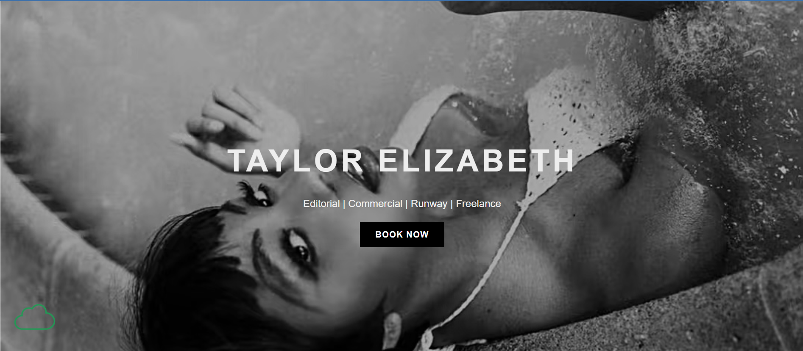

Evaluation: Bercher, Trevor

Evaluation: Home
The link in the Itis3135 folder leads to the front page of the website without issue
Design:
- Contrast and Font: The home page presents clearly defined, font contrasts against the light background allowing for easy readability. The site uses an external stylesheet that is clearly defined and includes the validation script.
- Web Structure and Files: The name of this html file is lowercase and in the correct naming format "index".
- Inner Page Structure: The page includes a header and footer supported from a components folder through an approved script.
The header also supports a nav bar with links to the other internal pages and a main in-between the header and footer.
The footer contains the brand name and doesn't resemble a school site, none of the links on those page include the word "page", lastly no personal links were found.
The main starts with an h1 and not an h2 and does not include a "brand tagline".
- Validations: As said above, the page has the validation script and inspection shows a perfect 10 as well as html and CSS validations.
- Opinions: The home page gives off the impression of professional, this looks like a page from a proper page for a purpose.
The only issue i could see is the h1 title on the black and white background may be a bit hard to read, a tinted block behind the title may fix this
Does this page serve its purpose of a landing / home page "yes".
Evaluation: LookBook
From the home page this page opens with no issues.
Design:
- Contrast and Font: The LookBook contents are clear and visible, the dark font contrasts greatly with the light background allowing for easy readability. The picture types have a dark box behind them for better readability.
- Web Structure and Files: The name of the html file is lowercase.
- Inner Page Structure: The page has a header and footer imported in by a script, the header does not contain the page name but the site name, lastly a nav element is seen.. The main is also present housing a series of div elements, as well as having a page title in an h2 element. The footer has the design company name and does not have personal links, no resemblance to a school related site.
- Validations: The validator included in the page shows 9.6 probably due to a missing h1 at the top of the page, other than that html and CSS are error free.
- Opinions: This page like the last one is perfect and serves its purpose however
I feel like a margin could be put in-between the edge pictures and the edge of the page.
Evaluation: Specifications
From any page in the website the Specifications page can be accessed without issue.
Design:
- Contrast and Font: As with the previous two pages the fonts have great contrast against the background of the page.
- Web Structure and Files: The name of the file is lowercase and structured correctly.
- Inner Page Structure: The page has a header with a nav bar, a main with content and a h2 with a page title, then lastly a footer with a company name. The site does not have personal links or resemble a school page.
- Validations: The validator does not throw any html or CSS errors and contrast is good.
- Opinions: The page does its job perfectly and matches the style of the rest of the site.
Evaluation: About
The link for this page works without errors.
Design:
- Contrast and Font: The sites fonts and headers are readable, perfect size and structure.
- Web Structure and Files: The file is named and placed correctly in the site.
- Inner Page Structure: The page has a header with a nav and no page title, a main with content and a h2 page title, and a footer with the design company name and no personal links.
- Validations: The validator does not show any html or CSS errors and the internal contrast test is perfect.
- Opinions: The about page is nicely formatted and achives its goal.
Evaluation: Casting Dashboard
The link for this page works without errors.
Design:
- Contrast and Font: The font is easily readable on the page.
- Web Structure and Files: This page is named correctly and structured within the site folder correctly as well.
- Inner Page Structure: This page contains a header with a nav element and no site title, a main with content and a h2 page title, and a footer with the company name and no personal links.
- Validations: The validator shows no errors for CSS and html, a 10 with no contrast errors.
- Opinions: The page serves its purpose no recommendations
Evaluation: Book Now
The link for this page works without issue
Design:
- Contrast and Font: The font and input fields are readable in the page.
- Web Structure and Files: The file is correctly titled and structured.
- Inner Page Structure: The page contains a header with a nav element and no page title, the main contains content with a h2 page title, and the footer has the company name with no personal links.
- Validations: The validator shows no errors for html and CSS,
there are two contrast errors for the optional word and the background.
- Opinions: This page feels like a form page and serves it purpose, no recommendations
Overall Crap Principles:
- Contrast: The text is very easy to read and understand and all pages follow the same main color scheme, other than the suggestions above the site is readable.
- Repitition: The site doesnt deviate from an established pattern and keeps a concistant theme
- Alignment: The alingment of the pages are concistently centered on each page making them feel uniform. The page "casting dashboard" seems to align to the left, centering the content and giving a prievew of the download may help this page even more.
- Proximity: Gorups of related text are close together on every page and on pages like Specifications valsues are spaced apart for better readability.